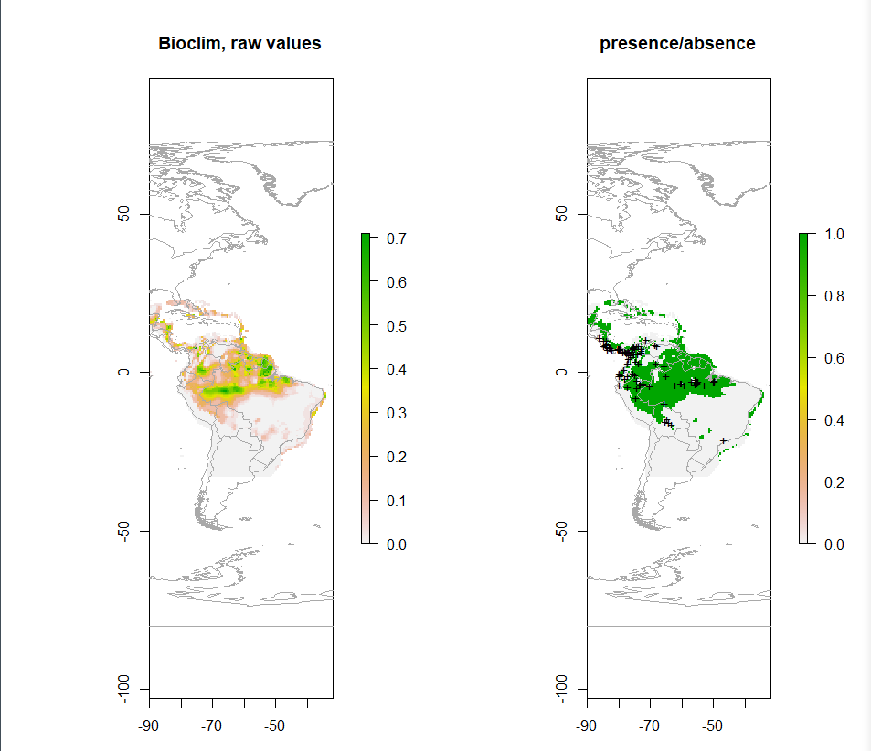

Projects
Check Out My GitHub!-
Subband Image Compression
GitHub RepoDescription
The goal of this project was to test the effects of subband image compression on a test image. Different quatization levels and wavelets can be specified.

-
Person Detection System
WebsiteDescription
PiSense is an IoT security solution that aims to accurately identify potential threats through object detection. Current "smart" security systems only contain simple motion detection systems that cannot differentiate a Human from a SUV. Instead PiSense utilizes object detection through Neural Networks to identify humans. Now rather than getting flooded with notification from an motion, the user will now only get notified if a Human's presence is detected. PiSense can also identify whether the subject is known or a potential intruder through facial recognition.

-
Sudoku Paradise
GitHub RepoDescription
The site will be a place for users to learn about and play the game Sudoku. The hope is that it will be enjoyed by users at a variety of skill levels by offering a tutorial and multiple difficulties. this website was designed as my final project in my graduate Web Programming course.
-
Species Distribution Modelling
GitHub RepoDescription
Creating various Species Distribution Models using different correlative methods in R. Following a SDM tutorial linked in my repo I was able to build SDMs using the following methods: Profile, Classical Linear Regression, and Machine Learning.
